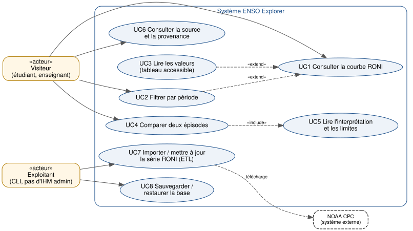
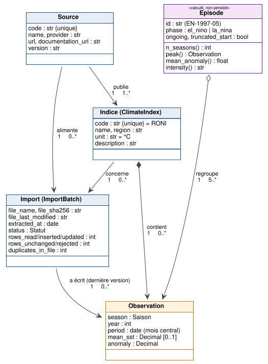
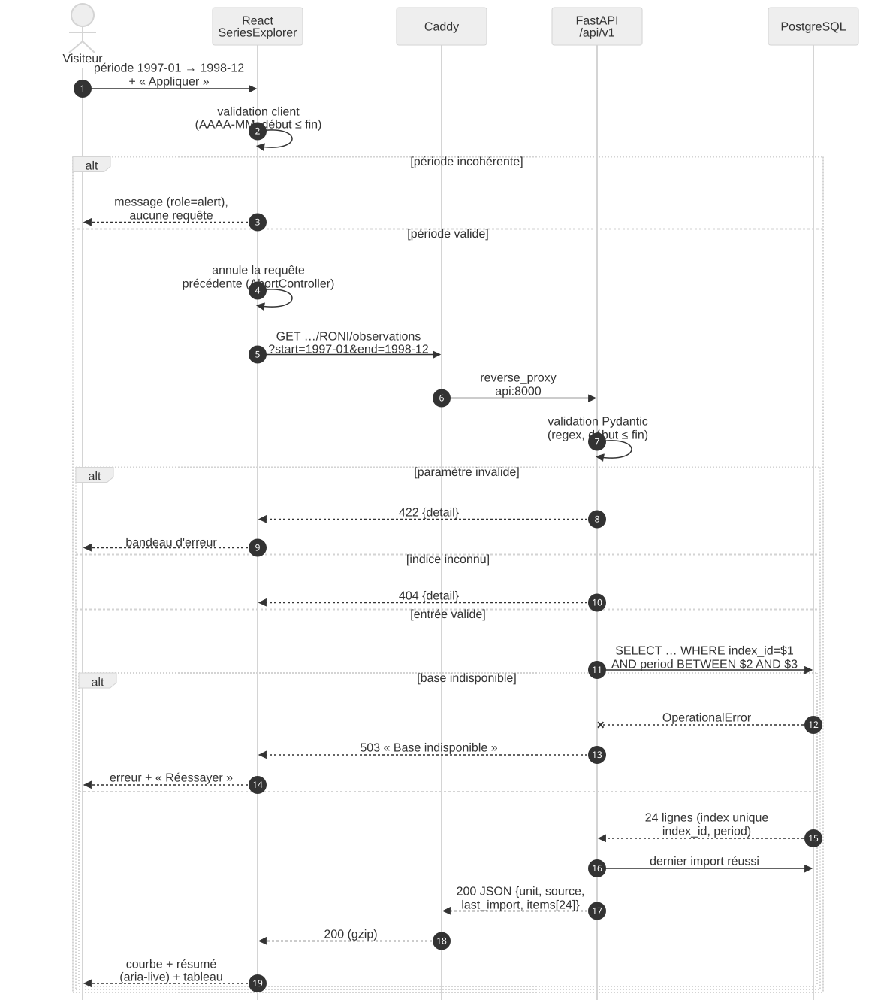
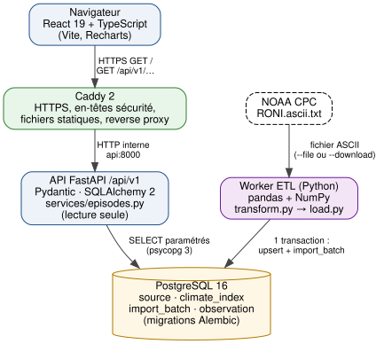
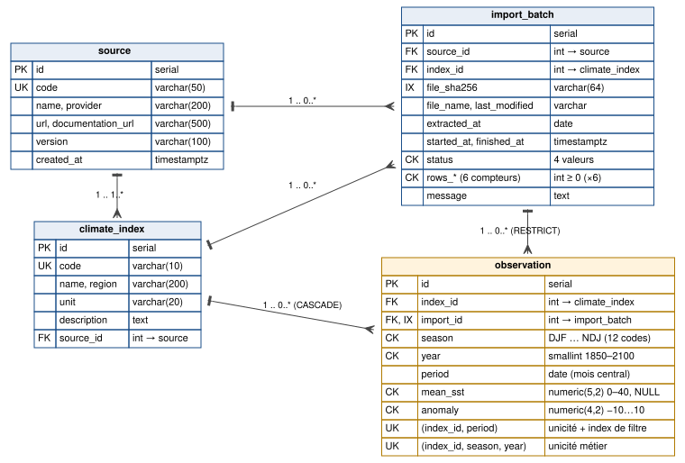
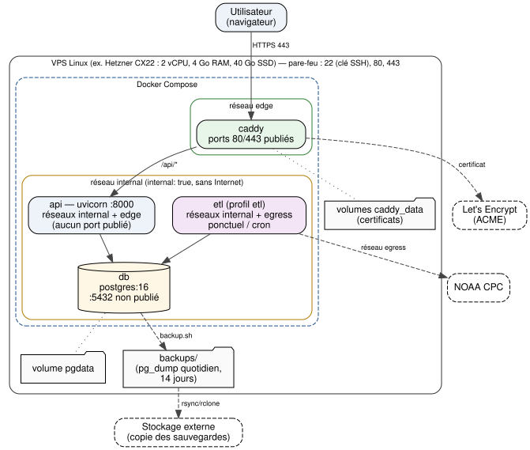

Application web d'exploration des épisodes El Niño et La Niña
à partir de l'indice NOAA RONI (Relative Oceanic Niño Index)
| Autrice | Katia Sakri |
| Date | Novembre 2026 |
| Indice retenu | RONI — NOAA Climate Prediction Center, ERSST v6, extrait le 21/11/2026 |
| Pile | React · TypeScript · Vite — FastAPI · Pydantic — PostgreSQL · SQLAlchemy · Alembic — Pandas · NumPy — Docker Compose · Caddy |
| Dépôt Git | lien fourni dans le fichier LIEN_DEPOT.txt du rendu |
Livrables : (A) dépôt Git — frontend, API, ETL, données sourcées, tests et preuves d'exécution (docs/preuves/) ; (B) le présent dossier (15 pages maximum, couverture comprise). Aucune donnée climatique n'est inventée : toutes les valeurs citées proviennent du fichier NOAA importé.
El Niño et La Niña sont les deux phases de l'oscillation australe (ENSO) : un réchauffement ou un refroidissement anormal des eaux de surface du Pacifique équatorial, aux conséquences climatiques mondiales. Les données qui les décrivent existent et sont publiques, mais elles sont publiées sous forme de fichiers texte bruts difficiles à lire. ENSO Explorer transforme une série scientifique réelle de NOAA en visualisations compréhensibles, sourcées et vérifiables, et permet de comparer deux épisodes historiques sans en surinterpréter les chiffres.
Le sujet impose une seule série : ONI ou RONI. J'ai retenu le RONI (Relative Oceanic Niño Index) : moyenne glissante sur 3 mois des anomalies de température de surface de la mer (SST) de la région Niño 3.4 (5°N–5°S, 120°–170°W), moins l'anomalie moyenne de toute la bande tropicale (20°N–20°S), puis ajustée pour garder la même variance que l'indice Niño 3.4. Calcul NOAA CPC sur ERSST v6, période de référence 1991–2020. Raisons : (1) il retire l'effet du réchauffement global de l'océan, ce qui rend la comparaison d'épisodes de décennies différentes (fonctionnalité n°4 du MVP) plus juste ; (2) c'est l'indice utilisé par NOAA pour le suivi officiel de l'ENSO depuis 2026 ; (3) la même règle d'épisode s'applique (±0,5 °C pendant au moins 5 saisons consécutives).
| Élément de provenance | Valeur documentée (fichier data/raw/SOURCE.md) |
|---|---|
| Fichier source | https://www.cpc.ncep.noaa.gov/data/indices/RONI.ascii.txt |
| Version | RONI ERSST v6 (référence 1991–2020) — vérifié en comparant les 921 valeurs à la table RONI de CPC : 914 identiques, 7 écarts dus uniquement à l'arrondi d'un 5 final |
| Date d'extraction | 21/11/2026 ; Last-Modified NOAA : 03/11/2026 19:31:48 GMT |
| Couverture, unité | 921 saisons glissantes, DJF 1950 → ASO 2026 ; °C ; colonnes saison, année, anomalie |
| Empreinte | SHA-256 1297887f…5f35c8 (stockée à chaque import en base) |
Dans le MVP
/api/v1 documentée (OpenAPI), filtrage temporel validé.Hors périmètre (choix assumé)
| ID | User story | Prio. | Critères d'acceptation (vérifiés par) |
|---|---|---|---|
| US1 | En tant qu'exploitante, je veux importer le fichier RONI de NOAA dans la base afin de disposer d'une série fiable. | Must | 921 observations insérées ; un 2e import du même fichier n'insère rien (statut skipped) ; les doublons et dates invalides sont rejetés avec leur motif ; l'import est tracé (SHA-256, date). (test_transform, test_episodes_and_etl) |
| US2 | En tant que visiteur, je veux voir la courbe du RONI pour repérer les épisodes chauds et froids. | Must | Courbe affichée avec axes titrés, unité °C, seuils ±0,5 °C et légende ; source NOAA et date d'extraction visibles sous le graphique. |
| US3 | En tant que visiteur, je veux choisir une période afin de zoomer sur un épisode. | Must | Début/fin au format AAAA-MM ; « Appliquer » met à jour la courbe, le résumé et le tableau ; une période incohérente affiche un message sans appeler l'API. (SeriesExplorer.test.tsx) |
| US4 | En tant qu'étudiant, je veux comparer deux épisodes historiques pour argumenter avec des chiffres. | Must | Choix parmi les épisodes détectés ; tableau (durée, pic, moyenne, cumul) ; courbes superposées ; interprétation et limites écrites ; même épisode choisi deux fois → refus (422). (test_api) |
| US5 | En tant qu'utilisateur au clavier ou avec lecteur d'écran, je veux accéder aux mêmes informations. | Should | Tout est atteignable à la touche Tab avec un focus visible ; tableau de données équivalent au graphique ; erreurs annoncées (role="alert"). |
| US6 | En tant que visiteur, je veux être informé en cas de panne et pouvoir réessayer. | Should | API ou base indisponible → message explicite et bouton « Réessayer » ; aucune page blanche. |
| US7 | En tant qu'exploitante, je veux récupérer les révisions NOAA sans tout recharger. | Could | Option --download ; une valeur révisée est mise à jour (et non dupliquée) et rattachée au nouvel import. |
P1 — Explorer. Arrivée sur la page → courbe 1980-2026 et résumé (« 561 saisons, maximum +2,40 °C en DJF 1983 ») → clic sur le préréglage « 1997–1999 » ou saisie d'une période → courbe, résumé et tableau mis à jour → lecture de la source. P2 — Comparer. Sélection de l'épisode A et de l'épisode B (listes groupées El Niño / La Niña, pic indiqué) → « Comparer » → tableau d'indicateurs, courbes alignées sur le début de chaque épisode, interprétation chiffrée puis limites. P3 — Erreur. L'API ne répond pas → bandeau d'erreur et « Réessayer » ; les données déjà affichées restent visibles.
Figure 1 — Wireframe bureau : une seule page, deux sections (exploration puis comparaison).
Figure 2 — Mobile (≤ 640 px) : champs pleine largeur, cibles ≥ 36 px.

Figure 3 — Cas d'utilisation : deux acteurs humains, un système externe (NOAA).
Lecture. La frontière du système contient tout ce que livre l'application. Le visiteur est anonyme et ne fait que lire (UC1–UC6) : l'API ne contient aucune route d'écriture, ce qui supprime le besoin d'authentification. Filtrer (UC2) et lire le tableau (UC3) étendent la consultation : ce sont des options. L'interprétation (UC5) est incluse dans la comparaison (UC4) : on ne montre jamais des chiffres comparés sans leurs limites. J'ai remplacé l'administrateur par un exploitant qui travaille en ligne de commande (UC7–UC8), car une interface d'administration aurait ajouté des comptes, des mots de passe et un contrôle d'accès sans servir le MVP. NOAA est un acteur secondaire : il n'utilise pas le système, il fournit le fichier.

Figure 4 — Entités Source, Indice (ClimateIndex), Import (ImportBatch), Observation ; Episode est calculé.
Justification des cardinalités.
climate_index de plus, sans changer le schéma.(indice, période) est unique : c'est ce qui rend les doublons impossibles, même si l'ETL a un bug.Choix de modélisation de la période. Le fichier NOAA donne une saison (« NDJ ») et une année (1997). NDJ 1997 couvre nov. 1997 → janv. 1998 : l'année est celle du mois central. Je stocke donc period = 1er jour du mois central (1997-12-01). Ce champ de type DATE permet un tri et un filtre BETWEEN simples et indexables, sans arithmétique sur les saisons dans les requêtes.

Figure 5 — De la saisie de la période à l'affichage, avec les quatre chemins d'erreur.
Lecture. La validation est faite deux fois. Côté client, elle évite une requête inutile et donne un retour immédiat. Côté serveur, elle est obligatoire, car un client peut toujours appeler l'API directement (curl, script). La requête précédente est annulée (AbortController) : si l'utilisateur change vite de période, une réponse lente ne peut pas écraser une réponse plus récente. La requête SQL est paramétrée ($1, $2, $3) et s'appuie sur l'index unique (index_id, period). Chaque erreur a un code HTTP distinct (422 entrée invalide, 404 ressource inconnue, 503 base indisponible) et un rendu dédié dans l'interface. Le détail technique d'une erreur est journalisé côté serveur, jamais renvoyé au client.

Figure 6 — Architecture logique : quatre composants, une responsabilité chacun.
Flux d'alimentation (écriture, rare). NOAA publie oni.ascii.txt → le worker ETL lit le fichier et calcule son SHA-256 → s'il est déjà importé : arrêt (skipped) → sinon transform.py le parse, rejette les lignes invalides, déduplique et calcule la période → load.py compare chaque saison avec la base (insertion, mise à jour si NOAA a révisé la valeur, ou rien) et enregistre l'import, le tout dans une seule transaction.
Flux de consultation (lecture, fréquent). Navigateur → Caddy (HTTPS) → FastAPI (validation) → PostgreSQL (SELECT indexé) → JSON typé → React (courbe, résumé, tableau). Les épisodes sont recalculés à chaque appel à partir des observations.
Séparation des responsabilités. Le frontend ne contient aucune règle scientifique : seuils, épisodes et interprétation sont côté API, à un seul endroit, et testés en Python. Le frontend n'affiche que ce que l'API calcule.
| Composant | Responsabilité | Échanges |
|---|---|---|
| Frontend React | Affichage, saisie, validation de confort, accessibilité. Composants : PeriodFilter, OniChart, DataTable, EpisodeComparison, StatusMessage ; hook useAsync ; client typé api/client.ts. | Uniquement GET /api/v1/… (JSON), même origine via Caddy. |
| API FastAPI | Contrat public versionné, validation Pydantic, règles métier (détection d'épisodes, interprétation). Lecture seule. | SQL paramétré vers PostgreSQL ; OpenAPI publié. |
| Worker ETL | transform.py : fonctions pures pandas/NumPy (parse, contrôles, doublons, période). load.py : idempotence par SHA-256, upsert, traçabilité. | Lit le fichier NOAA ; écrit en base dans une transaction. |
| PostgreSQL | Source de vérité ; intégrité garantie par contraintes (FK, UNIQUE, CHECK). | Accessible seulement depuis le réseau interne. |
| Décision | Besoin | Solutions envisagées | Choix, avantages / limites | Vérification |
|---|---|---|---|---|
| PostgreSQL | Stocker une série datée, garantir l'unicité et la provenance. | Fichier CSV lu par l'API ; SQLite ; PostgreSQL. | PostgreSQL : contraintes UNIQUE/CHECK/FK appliquées par le moteur, types DATE et NUMERIC exacts, accès concurrent, outillage de sauvegarde (pg_dump). Limite : un service de plus à exploiter (un CSV suffirait pour 921 lignes, mais n'offrirait ni intégrité ni traçabilité). | alembic check = modèle et migration identiques ; tests rejoués sur PostgreSQL 16. |
| ETL séparé de l'API | Importer sans exposer d'écriture sur Internet. | Route POST /import ; script au démarrage de l'API ; worker séparé. | Worker séparé (même image, autre commande) : l'API reste en lecture seule, donc une surface d'attaque minimale ; l'import peut être planifié (cron) ou rejoué ; la transformation est testable sans base. Limite : un composant supplémentaire à documenter. | Import rejoué = skipped ; révision = 1 mise à jour (test). |
API versionnée /api/v1 | Faire évoluer l'API sans casser le frontend. | Sans version ; en-tête ; préfixe d'URL. | Préfixe d'URL : lisible, simple à router dans Caddy, documenté dans OpenAPI. Une évolution incompatible (ex. ajout du RONI avec un autre format) irait en /api/v2 pendant que v1 reste servie. | docs/openapi.json ; test de présence des routes. |
| Épisodes calculés à la volée | Identifier et comparer des épisodes. | Table episode ; vue SQL ; calcul Python. | Fonction Python pure (detect_episodes) : règle NOAA lisible, testée unitairement, toujours cohérente avec les données. Coût mesuré : moins de 1 ms pour 921 points. Limite : à réévaluer si la série grossissait fortement. | 3 tests unitaires + épisodes connus retrouvés (1982–83, 1997–98, 2014–16). |
| Recharts + tableau | Courbe interactive et accessible. | D3 ; Chart.js (canvas) ; Recharts (SVG). | Recharts : composants React déclaratifs, rendu SVG, option accessibilityLayer (flèches clavier). Complété par un tableau HTML équivalent. Limite : bundle plus lourd (≈ 620 ko, 180 ko gzip) ; découpage possible en import dynamique. | Captures desktop/mobile ; parcours au clavier. |

Figure 7 — Tables, clés primaires/étrangères, contraintes et index (migration Alembic 0001_initial).
Intégrité. UNIQUE(index_id, period) et UNIQUE(index_id, season, year) empêchent les doublons, quel que soit le client qui écrit. Les CHECK bornent les valeurs : saison parmi les 12 codes, année 1850–2100, anomalie dans [−10 ; 10] °C, statut d'import dans une liste fermée. ON DELETE RESTRICT sur les imports et les sources interdit de supprimer la provenance d'une observation. Index utiles : l'index unique (index_id, period) sert directement le filtre temporel ; ix_observation_import_id sert la jointure de traçabilité ; ix_import_batch_file_sha256 sert le contrôle d'idempotence. Migrations : le schéma n'est créé que par Alembic (alembic upgrade head au démarrage du conteneur API). alembic check est exécuté en CI pour détecter tout écart entre le modèle SQLAlchemy et la base. Types : NUMERIC(4,2) conserve exactement les 2 décimales de NOAA (pas d'erreur d'arrondi binaire).
| ID | Tâche | Prio. | Estim. | US | Définition de « fini » |
|---|---|---|---|---|---|
| T1 | Récupérer le fichier RONI, vérifier la version (v5/v6) et documenter la provenance | Must | 0,5 j | US1 | SOURCE.md + SHA-256 |
| T2 | Modèle SQLAlchemy + migration Alembic (contraintes, index) | Must | 0,5 j | US1 | alembic check OK |
| T3 | ETL : transformation pure + chargement idempotent + tests de données | Must | 1 j | US1, US7 | 921 lignes ; tests verts |
| T4 | API : observations filtrées, validation, codes HTTP, tests API | Must | 0,75 j | US2–3 | OpenAPI + tests 422/404 |
| T5 | Détection et comparaison d'épisodes + interprétation prudente | Must | 0,5 j | US4 | épisodes connus retrouvés |
| T6 | Frontend : filtre, courbe, tableau, états d'erreur + test Vitest | Must | 1 j | US2–6 | test « période → courbe » vert |
| T7 | Docker Compose, Caddyfile, sauvegarde, CI | Should | 0,5 j | — | compose config OK |
| T8 | Dossier de conception, diagrammes, préparation de l'oral | Must | 1 j | — | ≤ 15 pages, relu |
| T9 | Bonus : ONI en second indice, ERA5, export CSV, admin | Won't | — | — | reporté |
| Jour | Matin | Après-midi | Jalon de fin de journée |
|---|---|---|---|
| J1 | Lecture du sujet, cadrage du MVP, choix ONI vs RONI, T1 | T2 (modèle, migration), squelette du dépôt, README | Données sourcées en base vide migrée |
| J2 | T3 transformation + tests de données | T3 chargement idempotent, T4 API | API qui sert les 921 observations, tests verts |
| J3 | T5 épisodes + interprétation | T6 courbe, filtre, tableau | Parcours P1 complet |
| J4 | T6 comparaison, états d'erreur, test Vitest, accessibilité | T7 Docker/Caddy/CI ; correction des anomalies | MVP complet, gel des fonctionnalités |
| J5 | T8 dossier (diagrammes, argumentation) | Relecture, exécution des tests pour les preuves, répétition orale (modifier une route, rejouer un bug) | Livrables A et B rendus |
Règle de priorité : chaque jour se termine sur un état démontrable. Les quatre fonctionnalités du MVP passent avant toute extension. Le gel des fonctionnalités en fin de J4 protège le temps du dossier et de la préparation orale, qui pèsent autant que le code.
| Risque | Impact | Mesure de réduction / arbitrage réellement appliqué |
|---|---|---|
| Site NOAA inaccessible ou format modifié | Élevé | Copie du fichier versionnée dans le dépôt avec son SHA-256 ; contrôle d'en-tête (OniFormatError). Survenu : NOAA était bloqué depuis l'environnement de développement ; le fichier a été récupéré par navigateur, puis son empreinte vérifiée. |
| Confusion ONI / RONI ou entre versions | Élevé | Comparaison automatique des 921 valeurs avec la table CPC v6 ; nom « RONI » affiché partout. Survenu : changement d'indice décidé en J5 ; coût limité grâce à l'architecture (voir section 8). |
| Surinterprétation scientifique | Moyen | Seuils affichés, « Super El Niño » non utilisé, liste de limites systématique, épisodes en cours ou tronqués signalés. |
| Dépassement du délai | Moyen | Administration, ERA5 et exports écartés ; détection d'épisodes en Python plutôt qu'en SQL (plus rapide à écrire et à tester). |
| Docker indisponible sur le poste | Faible | Lancement local documenté sans Docker ; déploiement facultatif ; compose.yaml validé par docker compose config. |
Git en commits conventionnels (feat(etl): …, build: …), un commit par étape fonctionnelle, ce qui rend la progression lisible dans l'historique. Qualité : ruff (lint et format Python), oxlint et tsc en mode strict (TypeScript). CI GitHub Actions : lint, migrations, pytest sur PostgreSQL, Vitest, build. Suivi : liste de tâches cochée au fil de l'eau, jalons quotidiens ci-dessus, preuves d'exécution archivées dans docs/preuves/. IA : Claude (voir section 8).
Pyramide simple : beaucoup de tests rapides sur la logique pure (transformation, épisodes), des tests d'API sur une base réellement chargée par l'ETL, et un test de composant frontend sur le parcours principal. Toutes les données de test sont les vraies valeurs NOAA (le fichier du dépôt), sauf les cas d'erreur construits volontairement. Résultats exécutés le 21/11/2026 (sorties complètes dans docs/preuves/) :
| Test exigé | Fichier · cas | Ce qui est vérifié | Résultat |
|---|---|---|---|
| Données (transformation) | test_transform.py · 11 cas | Fichier réel RONI : 921 lignes, 0 rejet, DJF 1950 = −1,19, NDJ 1997 = +2,28 ; saison en minuscules acceptée ; doublon identique et doublon conflictuel (garde le dernier) ; année 19X7, année 2200, saison inconnue, sentinelle −99,9 et anomalie hors bornes rejetées avec leur numéro de ligne ; trou de série signalé ; en-tête inattendu refusé ; l'ancien format ONI à 4 colonnes reste lisible. | 11/11 ✔ |
| API (route filtrée) | test_api.py · 12 cas | start=1997-01&end=1998-12 → 200, 24 saisons, pic NDJ 1997 = +2,28 °C, SST moyenne absente, source et SHA-256 présents ; 1997-13, 97-01, tentative d'injection SQL → 422 ; début > fin → 422 ; indice inconnu (ONI) → 404 ; start seul ; comparaison et ses erreurs. | 12/12 ✔ |
| Frontend (période → courbe) | SeriesExplorer.test.tsx · 4 cas | Saisie 1997-01 → 1998-12 puis « Appliquer » : requête envoyée avec ces paramètres, courbe passée de 561 à 24 points, résumé « maximum +2,28 °C (NDJ 1997) », tableau de 24 lignes ; préréglage ; période incohérente sans appel API ; erreur 503 puis « Réessayer ». | 4/4 ✔ |
| Complémentaires | test_episodes_and_etl.py · 4 cas | Règle des 5 saisons, 4 saisons insuffisantes, épisode « en cours » ; ETL idempotent et révision tracée. | 4/4 ✔ |
Total : 27 tests Pytest (exécutés sur SQLite et sur PostgreSQL 16) et 4 tests Vitest, tous verts ; ruff, oxlint et tsc strict sans erreur.
accessibilityLayer), boutons de préréglage avec aria-pressed.<figure> avec titre et description reliés (aria-labelledby/describedby), axes titrés avec unité, seuils distingués par la couleur et le motif (tirets), tableau de données équivalent, courbes comparées différenciées par couleur et pointillés.#1c2129 sur blanc, #1b4f8a pour les liens). Responsive : vérifié à 1280 px et 390 px (captures dans docs/captures/).role="status"), erreur (role="alert") et bouton « Réessayer », résumé en aria-live, aucune donnée → message explicite. Langue de la page déclarée en fr.| Menace | Mesure |
|---|---|
| Injection SQL | Requêtes construites par SQLAlchemy (paramètres liés), aucune concaténation ; entrées validées par expression régulière avant d'atteindre la base (test d'injection → 422). |
| Écriture non autorisée | API en lecture seule (méthodes GET uniquement, CORS limité à GET) ; import réservé à l'exploitant en CLI ; aucune administration web, donc pas de comptes à protéger. |
| Fuite de secrets | Secrets dans .env (ignoré par Git), .env.example sans valeur réelle ; erreurs internes journalisées côté serveur, message générique côté client. |
| Exposition réseau | Seul Caddy publie des ports ; PostgreSQL dans un réseau Docker internal ; conteneur API exécuté en utilisateur non root. |
| Navigateur | HTTPS forcé (HSTS), X-Content-Type-Options, X-Frame-Options: DENY, CSP stricte sur le frontend, en-tête Server retiré. |
| Données corrompues | Contraintes SQL, contrôle d'en-tête, SHA-256, transaction unique (tout ou rien), import en échec tracé (failed). |
La série complète fait 921 lignes (≈ 75 ko de JSON, compressé en gzip ou zstd par Caddy). Le filtre utilise l'index unique (index_id, period). La détection d'épisodes est en O(n). Les marqueurs de points ne sont dessinés qu'en dessous de 48 valeurs, pour garder un rendu fluide sur mobile. Piste d'amélioration : cache HTTP (Cache-Control) puisque les données changent au plus une fois par mois.
| Anomalie | Correctif | Vérification |
|---|---|---|
| Épisode La Niña de 1950 présenté avec une durée certaine alors qu'il commence avec la série. | Ajout de truncated_start ; interprétation « durée = borne minimale ». | Comparaison LN-1950-01 vérifiée ; tests épisodes verts. |
CSP globale dans Caddy : elle aurait bloqué /api/docs (Swagger UI charge ses scripts depuis un CDN). | CSP déplacée dans le bloc du frontend uniquement. | Relecture du Caddyfile ; Swagger hors CSP. |
| Libellés des seuils superposés à la courbe ; graduations irrégulières (−3 ; −1 ; 1 ; 3). | Libellés déplacés dans la légende ; graduations tous les 0,5 °C. | Nouvelles captures ; 4 tests Vitest verts. |
Le déploiement réel est facultatif et n'a pas été effectué (aucune dépense). Cette section décrit l'architecture cible et la procédure, et la justifie. Les fichiers cités existent dans le dépôt : compose.yaml, deploy/Caddyfile, deploy/backup.sh. La syntaxe du compose.yaml a été validée par docker compose config.

Figure 8 — Architecture cible : un VPS, quatre conteneurs, trois réseaux, des volumes, un seul point d'entrée.
VPS Linux (Debian 12 ou Ubuntu 24.04), par exemple Hetzner CX22 : 2 vCPU, 4 Go de RAM, 40 Go SSD (ordre de grandeur de quelques euros par mois, à vérifier au moment de l'achat, non acheté ici). Estimation de charge : PostgreSQL ≈ 100–200 Mo de RAM, API uvicorn ≈ 100 Mo, Caddy ≈ 30 Mo ; la base occupe moins de 1 Mo. 2 Go de RAM suffiraient. Je garde 4 Go pour pouvoir construire les images (npm ci, build Vite) sur le serveur et pour la marge d'exploitation.
Flux HTTPS : l'utilisateur ne parle qu'à Caddy (443). Caddy termine le TLS et relaie en HTTP vers api:8000 sur le réseau Docker. L'API parle à db:5432 sur le réseau internal, qui n'a aucune route vers l'extérieur. Seul le worker ETL a en plus une sortie Internet (egress) pour télécharger le fichier NOAA.
compose.yaml)services:
db: image: postgres:16-alpine · volume pgdata · réseau internal · healthcheck pg_isready
api: build ./backend · DATABASE_URL depuis .env · depends_on db (healthy) · réseaux internal + edge
CMD: alembic upgrade head && uvicorn app.main:app --proxy-headers # migrations au démarrage
etl: même image que l'api · profile "etl" (ponctuel) · depends_on api (migrations faites)
caddy: build ./frontend (build Vite → /srv) · ports 80, 443 · volume caddy_data (certificats)
networks:
internal: { internal: true } # pas de route vers Internet : PostgreSQL injoignable de l'extérieur
edge: {} # Caddy ↔ API
egress: {} # sortie Internet du seul worker ETL (option --download)
Pourquoi Docker Compose ? Besoin : quatre services à démarrer dans le bon ordre avec la même configuration en local et en production. Alternatives : installation manuelle (non reproductible), Kubernetes (disproportionné pour un serveur). Compose décrit toute la pile dans un fichier versionné, gère les dépendances par healthcheck et les volumes. Limite : orchestration sur un seul hôte, sans haute disponibilité.
deploy/Caddyfile){$DOMAIN} {
encode zstd gzip
header { Strict-Transport-Security "max-age=31536000" X-Frame-Options "DENY" -Server … }
handle /api/* { reverse_proxy api:8000 } # seule porte vers FastAPI
handle { header Content-Security-Policy "default-src 'self' …"
root * /srv try_files {path} /index.html file_server }
}
Caddy est le seul point d'entrée (ports 80 et 443). Il obtient et renouvelle automatiquement le certificat Let's Encrypt pour DOMAIN et redirige le HTTP vers le HTTPS. Il sert les fichiers statiques React et relaie /api/* vers l'API sur le réseau interne : frontend et API partagent la même origine, donc pas de CORS en production. Choisi plutôt que Nginx + Certbot, car il gère HTTPS sans configuration supplémentaire.
.env créé sur le serveur à partir de .env.example (mot de passe fort généré par openssl rand -base64 32), droits chmod 600, jamais commité.PasswordAuthentication no, PermitRootLogin no), utilisateur dédié membre du groupe docker, fail2ban.unattended-upgrades).ssh deploy@vps # 1. connexion par clé
git clone <dépôt> /opt/enso-explorer && cd /opt/enso-explorer
cp .env.example .env && nano .env # 2. DOMAIN, mots de passe (chmod 600 .env)
docker compose up -d --build # 3. build + démarrage (migrations appliquées)
docker compose run --rm etl # 4. import des 921 observations
curl https://$DOMAIN/api/v1/health # 5. contrôle : {"status":"ok","database":"ok"}
crontab -e → 15 3 * * * /opt/enso-explorer/deploy/backup.sh # 6. sauvegarde quotidienne
→ 0 6 6 * * cd /opt/enso-explorer && docker compose run --rm etl python -m etl.load --download
Mise à jour : git pull && docker compose up -d --build (Alembic applique les nouvelles migrations au démarrage). Retour arrière : git checkout <tag précédent> && docker compose up -d --build. Si une migration est en cause : alembic downgrade -1, ou restauration de la sauvegarde prise juste avant (procédure : sauvegarde manuelle avant chaque mise à jour).
pg_dump compressé chaque nuit (deploy/backup.sh), 14 jours conservés, copie hors serveur (rclone vers un stockage externe). Le fichier NOAA d'origine et son SHA-256 sont aussi dans Git : la base peut toujours être reconstruite par l'ETL.gunzip -c backups/enso_….sql.gz | docker compose exec -T db psql -U enso -d enso, puis contrôle via /api/v1/health et /api/v1/imports. À tester une fois par trimestre.docker compose logs), rotation par Docker (max-size). L'historique des imports se trouve dans la table import_batch.restart: unless-stopped) et sonde externe gratuite (ex. UptimeRobot) sur /api/v1/health, avec alerte par e-mail.Point unique de défaillance (pas de haute disponibilité), maintenance avec une courte interruption, montée en charge verticale seulement. Pistes simples par ordre de coût : en-têtes de cache sur l'API (données mensuelles) ; build des images en CI et publication dans un registre (évite de compiler sur le VPS) ; base managée ou réplica PostgreSQL ; CDN devant Caddy pour les fichiers statiques.
Un MVP volontairement réduit : une série (RONI), une page, une API en lecture seule, un ETL en ligne de commande. Chaque choix est défendable par un besoin et vérifié par un test ou une commande : intégrité dans PostgreSQL plutôt que dans le code, ETL séparé pour ne rien exposer en écriture, API versionnée pour évoluer sans casser, épisodes calculés pour rester cohérents avec les révisions NOAA, Caddy pour un HTTPS sans effort. Les extensions (RONI, ERA5, administration) ont été écartées au profit de la qualité et de la compréhension du MVP.
Outil utilisé : Claude (Anthropic), dans l'application Claude. Usages :
Ce que l'IA ne remplace pas. Je dois pouvoir expliquer chaque fichier, refaire une route (par exemple ajouter un paramètre phase ou un filtre par année), reproduire un bug et le corriger en relançant les tests. Toutes les décisions sont argumentées ici, même lorsqu'elles viennent d'une suggestion de l'IA. Aucun test n'est présenté comme exécuté sans l'avoir été : les sorties sont dans docs/preuves/. Aucune donnée climatique n'a été inventée : les valeurs de test proviennent du fichier NOAA.
climate_index), aucune migration de base n'a été nécessaire.compose.yaml est validé syntaxiquement ; la démonstration complète se fait en local avec Docker Desktop.Une donnée scientifique se traite avec la même rigueur que le code : connaître sa version, prévoir ses révisions, et écrire ce qu'elle ne dit pas. Sur le plan technique, séparer une transformation pure (testable sans base) du chargement (transactionnel, tracé) rend les tests simples et les erreurs faciles à localiser. Suites possibles : un test de bout en bout Playwright sur la pile Docker complète, le RONI comme second indice (nouvelle ligne climate_index, API inchangée), et un cache HTTP.